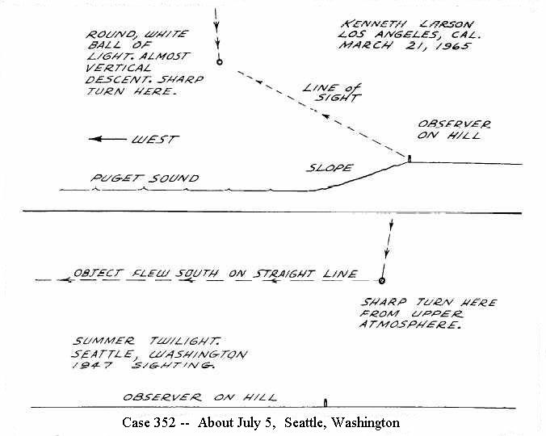

Scientifiques (Types particuliers de témoins, Rapport sur la vague d'ovnis de 1947)
Cas 109 : 29 juin, près de Las Cruces (Nouveau-Mexique)
Le Dr. C. J. Zohn, de Washington (D.C.), expert des missiles téléguidés au NRL, se trouvait au Nouveau-Mexique pour observer un lancer de fusée V-2 prévu
le 3 juillet. , il se rendait sur le terrain d'essai pour examiner le site, dans
une voiture conduite par John R. Kauke, qui était alors affecté au Site d'Essais. Zohn était accompagné par un
scientifique associé du NRL, Curtis Rockwood, ainsi que sa femme.
They were about a third of the way en route from Las Cruces, driving northeast on Route 17, when, according to Dr.
Zohn, "Kauke suddenly spotted a glare in the sky
" through the windshield of the car. "We all looked up and
saw a silvery disc whirling through the unclouded sky
," he later reported. Kauke stopped the car and Zohn, who
was to the driver's right, rolled down the window to get a better look.
The object was ahead of and to the right of the witnesses. It was round, either disc-shaped or spherical, with no
appendages such as wings, tails, or propellers, and it was moving in a straight northerly course at a rapid rate of
speed. Kauke estimated that the altitude of the object was between 8,000 and 10,000 feet, although Dr. Zohn refused
to make any guesses without knowledge of the size of the object. Kauke also described seeing a short vapor trail at
one point during the observation -- something the others did not see.
For 30 to 60 seconds the four observers viewed the object, "and then it simply disappeared
," Dr, Zohn
reported. "We didn't see it again
." Zohn, familiar with many types of guided missiles used by the Navy, said
the object "did not resemble anything
" he had ever seen before. A detailed report was made to officials at
White Sands but according to newspaper accounts, this got the witnesses nothing but "fishy-eyed stares
" and "knowing
smiles
." The Air Force explanation for this sighting is "balloon
."
Case 133: July 1, near Summerside, Prince Edward Island, Canada
Dr. Charles K. Gunn, animal ecologist and head of an experimental fox farm in Summerside, was driving with his wife
along a highway at North Bedeque at an unspecified time during the day. With the Gunns were friends of theirs, Mr.
Roland Phillipson, who was manager of the Maritime Prices and Trade Board in Summerside, and his daughter, Anne.
Miss Phillipson was the first to notice a bright object moving rapidly across the sky, and she called it to the
attention of the others. Dr. Gunn stopped the car and reported later that they had observed the object "quite
plainly." Mr. Phillipson described it as "a shapeless object that glistened and gleamed in the bright sunlight."
Mrs. Gunn said that it appeared like "a large star as it traveled across the clear blue sky." Dr. Gunn reported that
the object made no noise and did not resemble an airplane. It was visible for about 30 seconds before it disappeared
to the south. All the witnesses said they were sure they had seen "something unusual" and could find no explanation
for what it might have been.
Case 187: July 3, Harborside, Maine
John F. Cole of South Brookville, Maine, identified in the Air Force report of the sighting as an astronomer, was
at Harborside, on the eastern shore of Penobscot Bay, when, at 2:30 p.m. EDT, his attention was attracted to the sky
by "a loud roar" overhead. Looking up he saw a loose, irregular formation of about ten objects moving northwest at a
speed somewhere between 600 and 1,200 miles an hour. The objects within the formation were mostly light-colored, and
each appeared to be from 50 to 100 feet wide; two of the objects "on the left tangent of the formation" appeared to
have "dark-shaped forms" which the observer thought might have been wings. The angular width of the entire formation
was about one and one-half degrees in diameter when first seen, and the formation was at a 50-degree elevation to
the north. The objects were milling about within the formation "like a swarm of bees," and Cole watched the
phenomenon for ten to fifteen seconds as it moved rapidly through about 300 degrees of arc before disappearing from
view in the northwest. In the Air Force files, the sighting is Unidentified.
Case 308: July 5, Sacramento, California
At about 8:00 a.m. PST, Dr. A. K. Carr, head of the Division of Animal Husbandry of the State Agricultural
Department, was with his wife in their yard when they saw two brilliant disc-like objects come out of the west, one
following the other and each trailing a "whitish vapor," which Dr. Carr described as "about the same size as the
disc itself." The first object, flying high in the sky, was "round and brilliant, like a star," and while an
estimate of its height was difficult to make, he said it appeared to be about 8,000 to 10,000 feet up and its
relative size was "about four inches in diameter."
When it reached a point in its straight course directly above Carr's home, it made a sharp 90° turn to the north
and continued its flight northward, passing out of view. The second object, which had been following it, continued
its straight course to the east. With the aid of a pair of 12-power, wide-vision binoculars, Dr. Carr watched the
first object closely. He said that as it made its turn, it banked and appeared, at that angle, to be very thin. Mrs.
Carr was watching the second object and she said that it appeared to be more "oval-shaped" than the first, and was
flying at a somewhat lower altitude. The Carrs watched the objects for nearly two minutes before they both
disappeared from view -- the one to the north and the other to the east.
Case 819: July 10, near Fort Sumner, New Mexico

Dr. Lincoln La Paz, of the Department of Meteoritics at the University of New Mexico, in Albuquerque, was driving
from Clovis, New Mexico, to Clines Corners in the late afternoon. With him were his wife
and two daughters. At 4:47 p.m. MST, in the vicinity of Fort Sumner, in the Pecos River Valley, all four almost
simultaneously noticed "a curious bright object almost motionless" near the horizon to the west, amidst a thick bank
of clouds. The object was ellipsoidal in shape and had "a sharp and firm regular outline, namely one of a smooth
elliptical character much harder and sharper than the edges of the clouds," La Paz later reported. The luminosity of
the object was "somewhat less white than the light of Jupiter in the dark sky," and did not appear to be "aluminum
or silver-colored
."
The object seemed to wobble slightly as it hung stationary at about 1° elevation; then, after approximately 30
seconds, it moved slightly upward and to the north and disappeared behind a cloud. Five seconds later it reappeared
at a 2° elevation and about 5° north of true west. "This remarkably sudden ascent thoroughly convinced me that we
were dealing with an absolutely novel airborne device
," La Paz later reported.
After its reappearance, the object continued to move at a slow speed to the north across the clouds. "As seen
projected against these dark clouds, the object gave the strongest impression of self-luminosity," La Paz said.
After having observed the object for two and a half minutes, La Paz said it finally disappeared behind a cloudbank,
determined by him to be about 20 to 30 miles off. Based on this estimate, the object would have been no less than
160 feet in length and 65 feet in width. An account of this sighting first appeared in Life Magazine, April
7, 1952, in an article written by Robert Ginna. In the Air Force files, it is Unidentified.